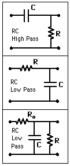

Filter CircuitsA variety of filter circuits can be made from combinations of capacitors, inductors, and resistors.  |
Index Capacitance concepts Inductance concepts | ||
|
Go Back |
Time Constant for TransientsThe electrical transient phenomena in capacitors and inductors are exponential processes. The coefficient of time in the exponential is an important rate parameter and is typically expressed in terms of a time constant. Having the units of time, the time constant represents the time for the exponential term to drop to 1/e or 36.79% of its original value. Each subsequent time constant will decrease it by the same fraction. The time constant is a standard parameter used to describe the characteristics of filter circuits. A standard application of low pass filters is to eliminate high frequency noise on signals like electrocardiograms. If the time constant is too short, there will not be enough filtering, but if it is too long, you will start to distort the shape of the ECG you are trying to preserve.
|
Index Capacitance concepts Inductance concepts | |||
|
Go Back |